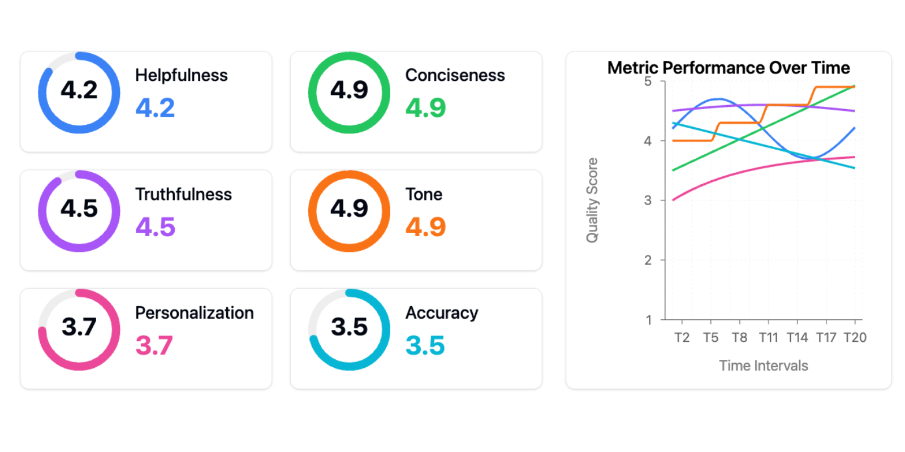
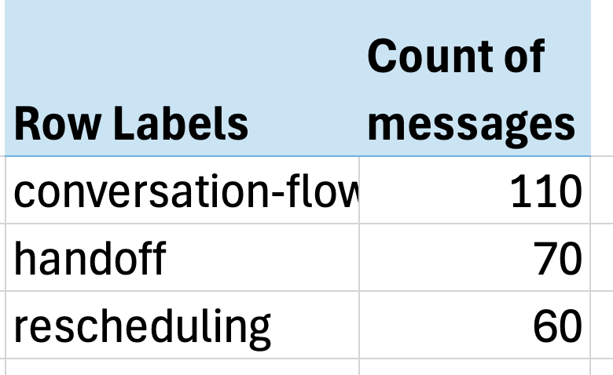
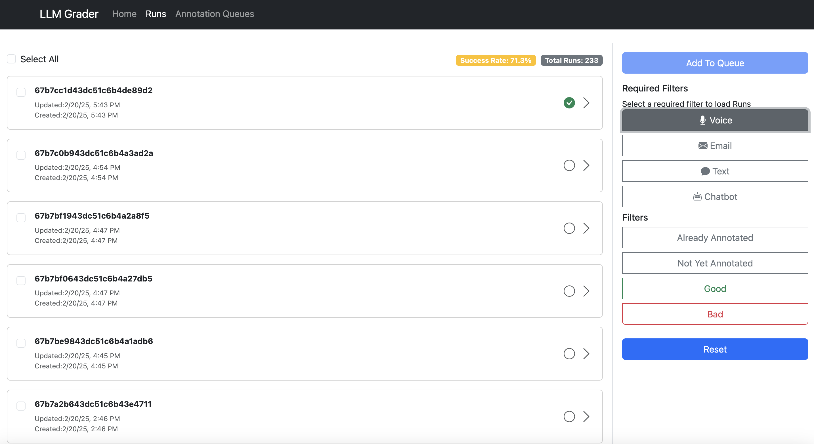
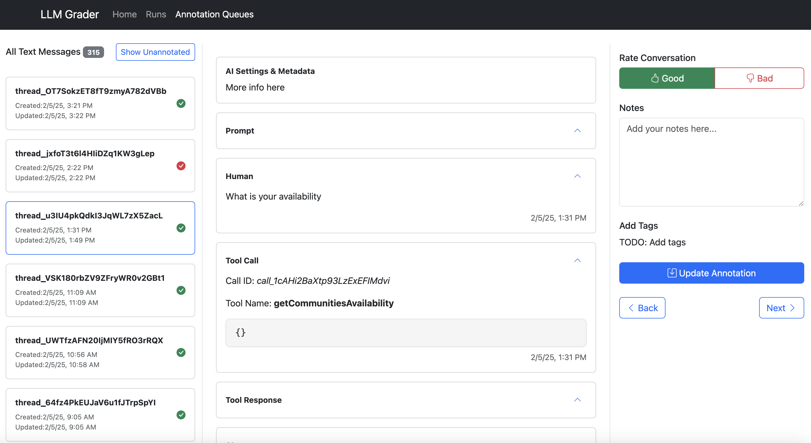
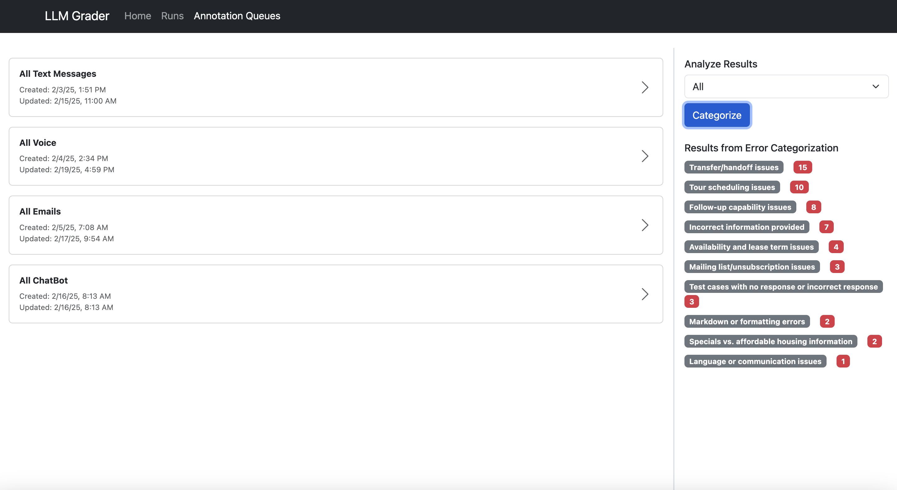
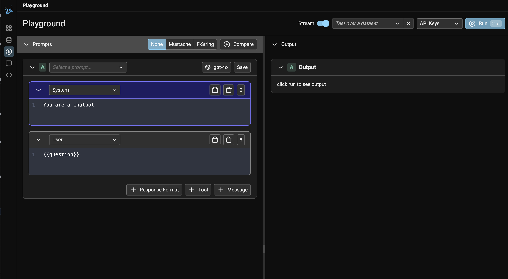
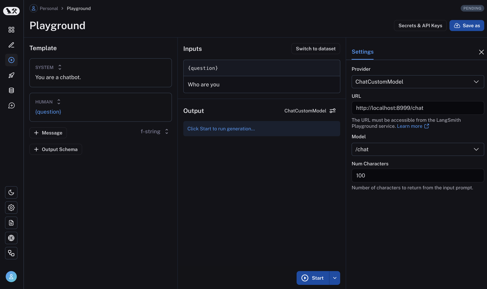
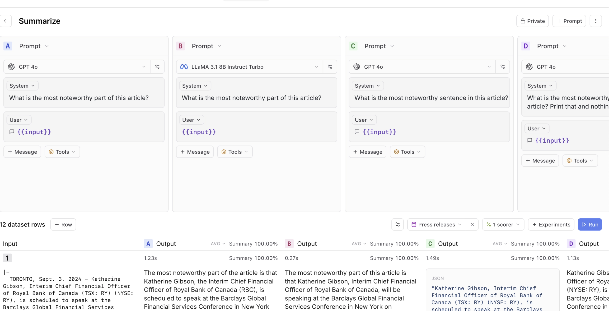
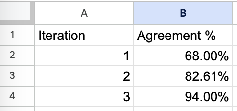

A Field Guide to Rapidly Improving AI Products
Most AI teams focus on the wrong things. Here’s a common scene from my consulting work:
Here’s our agent architecture – we’ve got RAG here, a router there, and we’re using this new framework for…
[Holding up my hand to pause the enthusiastic tech lead.]
“Can you show me how you’re measuring if any of this actually works?”
This scene has played out dozens of times over the last two years. Teams invest weeks building complex AI systems, but can’t tell me if their changes are helping or hurting.
This isn’t surprising. With new tools and frameworks emerging weekly, it’s natural to focus on tangible things we can control – which vector database to use, which LLM provider to choose, which agent framework to adopt. But after helping 30+ companies build AI products, I’ve discovered the teams who succeed barely talk about tools at all. Instead, they obsess over measurement and iteration.
In this post, I’ll show you exactly how these successful teams operate. You’ll learn:
- How error analysis consistently reveals the highest-ROI improvements
- Why a simple data viewer is your most important AI investment
- How to empower domain experts (not just engineers) to improve your AI
- Why synthetic data is more effective than you think
- How to maintain trust in your evaluation system
- Why your AI roadmap should count experiments, not features
I’ll explain each of these topics with real examples. While every situation is unique, you’ll see patterns that apply regardless of your domain or team size.
Let’s start by examining the most common mistake I see teams make – one that derails AI projects before they even begin.
1. The Most Common Mistake: Skipping Error Analysis
The “tools first” mindset is the most common mistake in AI development. Teams get caught up in architecture diagrams, frameworks, and dashboards while neglecting the process of actually understanding what’s working and what isn’t.
One client proudly showed me this evaluation dashboard:

This is the “tools trap” – the belief that adopting the right tools or frameworks (in this case, generic metrics) will solve your AI problems. Generic metrics are worse than useless – they actively impede progress in two ways:
First, they create a false sense of measurement and progress. Teams think they’re data-driven because they have dashboards, but they’re tracking vanity metrics that don’t correlate with real user problems. I’ve seen teams celebrate improving their “helpfulness score” by 10% while their actual users were still struggling with basic tasks. It’s like optimizing your website’s load time while your checkout process is broken – you’re getting better at the wrong thing.
Second, too many metrics fragment your attention. Instead of focusing on the few metrics that matter for your specific use case, you’re trying to optimize multiple dimensions simultaneously. When everything is important, nothing is.
The alternative? Error analysis - the single most valuable activity in AI development and consistently the highest-ROI activity. Let me show you what effective error analysis looks like in practice.
The Error Analysis Process
When Jacob, the founder of Nurture Boss, needed to improve their apartment-industry AI assistant, his team built a simple viewer to examine conversations between their AI and users. Next to each conversation was a space for open-ended notes about failure modes.
After annotating dozens of conversations, clear patterns emerged. Their AI was struggling with date handling – failing 66% of the time when users said things like “let’s schedule a tour two weeks from now.”
Instead of reaching for new tools, they: 1. Looked at actual conversation logs 2. Categorized the types of date-handling failures 3. Built specific tests to catch these issues 4. Measured improvement on these metrics
The result? Their date handling success rate improved from 33% to 95%.
Here’s Jacob explaining this process himself:
Bottom-Up vs. Top-Down Analysis
When identifying error types, you can take either a “top-down” or “bottom-up” approach.
The top-down approach starts with common metrics like “hallucination” or “toxicity” plus metrics unique to your task. While convenient, it often misses domain-specific issues.
The more effective bottom-up approach forces you to look at actual data and let metrics naturally emerge. At NurtureBoss, we started with a spreadsheet where each row represented a conversation. We wrote open-ended notes on any undesired behavior. Then we used an LLM to build a taxonomy of common failure modes. Finally, we mapped each row to specific failure mode labels and counted the frequency of each issue.
The results were striking - just three issues accounted for over 60% of all problems:

- Conversation flow issues (missing context, awkward responses)
- Handoff failures (not recognizing when to transfer to humans)
- Rescheduling problems (struggling with date handling)
The impact was immediate. Jacob’s team had uncovered so many actionable insights that they needed several weeks just to implement fixes for the problems we’d already found.
If you’d like to see error analysis in action, we recorded a live walkthrough here.
This brings us to a crucial question: How do you make it easy for teams to look at their data? The answer leads us to what I consider the most important investment any AI team can make…
2. The Most Important AI Investment: A Simple Data Viewer
The single most impactful investment I’ve seen AI teams make isn’t a fancy evaluation dashboard – it’s building a customized interface that lets anyone examine what their AI is actually doing. I emphasize customized because every domain has unique needs that off-the-shelf tools rarely address. When reviewing apartment leasing conversations, you need to see the full chat history and scheduling context. For real estate queries, you need the property details and source documents right there. Even small UX decisions – like where to place metadata or which filters to expose – can make the difference between a tool people actually use and one they avoid.
I’ve watched teams struggle with generic labeling interfaces, hunting through multiple systems just to understand a single interaction. The friction adds up: clicking through to different systems to see context, copying error descriptions into separate tracking sheets, switching between tools to verify information. This friction doesn’t just slow teams down – it actively discourages the kind of systematic analysis that catches subtle issues.
Teams with thoughtfully designed data viewers iterate 10x faster than those without them. And here’s the thing: these tools can be built in hours using AI-assisted development (like Cursor or Loveable). The investment is minimal compared to the returns.
Let me show you what I mean. Here’s the data viewer built for NurtureBoss (which we discussed earlier):



Here’s what makes a good data annotation tool:
- Show all context in one place. Don’t make users hunt through different systems to understand what happened.
- Make feedback trivial to capture. One-click correct/incorrect buttons beat lengthy forms.
- Capture open-ended feedback. This lets you capture nuanced issues that don’t fit into a pre-defined taxonomy.
- Enable quick filtering and sorting. Teams need to easily dive into specific error types. In the example above, NurtureBoss can quickly filter by the channel (voice, text, chat) or the specific property they want to look at quickly.
- Have hotkeys that allow users to navigate between data examples and annotate without clicking.
It doesn’t matter what web frameworks you use - use whatever you are familiar with. Because I’m a python developer, my current favorite web framework is FastHTML coupled with MonsterUI, because it allows me to define the back-end and front-end code in one small python file.
The key is starting somewhere, even if it’s simple. I’ve found custom web apps provide the best experience, but if you’re just beginning, a spreadsheet is better than nothing. As your needs grow, you can evolve your tools accordingly.
This brings us to another counter-intuitive lesson: the people best positioned to improve your AI system are often the ones who know the least about AI.
3. Empower Domain Experts To Write Prompts
I recently worked with an education startup building an interactive learning platform with LLMs. Their product manager, a learning design expert, would create detailed PowerPoint decks explaining pedagogical principles and example dialogues. She’d present these to the engineering team, who would then translate her expertise into prompts.
But here’s the thing: prompts are just English. Having a learning expert communicate teaching principles through PowerPoint, only for engineers to translate that back into English prompts, created unnecessary friction. The most successful teams flip this model by giving domain experts tools to write and iterate on prompts directly.
Build Bridges, Not Gatekeepers
Prompt playgrounds are a great starting point for this. Tools like Arize, Langsmith and Braintrust let teams quickly test different prompts, feed in example datasets, and compare results. Here are some screenshots of these tools:



But there’s a crucial next step that many teams miss: integrating prompt development into their application context. Most AI applications aren’t just prompts – They commonly involve RAG systems pulling from your knowledge base, agent orchestration coordinating multiple steps, and application-specific business logic. The most effective teams I’ve worked with go beyond standalone playgrounds. They build what I call integrated prompt environments – essentially admin versions of their actual user interface that expose prompt editing.
Here’s an illustration of what an integrated prompt environment might look like for a real estate AI assistant:
Tips For Communicating With Domain Experts
There’s another barrier that often prevents domain experts from contributing effectively: unnecessary jargon. I was working with an education startup where engineers, product managers, and learning specialists were talking past each other in meetings. The engineers kept saying, “We’re going to build an agent that does XYZ,” when really the job to be done was writing a prompt. This created an artificial barrier – the learning specialists, who were the actual domain experts, felt like they couldn’t contribute because they didn’t understand “agents.”
This happens everywhere. I’ve seen it with lawyers at legal tech companies, psychologists at mental health startups, and doctors at healthcare firms. The magic of LLMs is that they make AI accessible through natural language, but we often destroy that advantage by wrapping everything in technical terminology.
Here’s a simple example of how to translate common AI jargon:
| Instead of saying… | Say… |
|---|---|
| “We’re implementing a RAG approach” | “We’re making sure the model has the right context to answer questions” |
| “We need to prevent prompt injection” | “We need to make sure users can’t trick the AI into ignoring our rules” |
| “Our model suffers from hallucination issues” | “Sometimes the AI makes things up, so we need to check its answers” |
This doesn’t mean dumbing things down – it means being precise about what you’re actually doing. When you say “we’re building an agent,” what specific capability are you adding? Is it function calling? Tool use? Or just a better prompt? Being specific helps everyone understand what’s actually happening.
There’s nuance here. Technical terminology exists for a reason – it provides precision when talking with other technical stakeholders. The key is adapting your language to your audience.
The challenge many teams raise at this point is: “This all sounds great, but what if we don’t have any data yet? How can we look at examples or iterate on prompts when we’re just starting out?” That’s what we’ll talk about next.
4. Bootstrapping Your AI With Synthetic Data Is Effective (Even With Zero Users)
One of the most common roadblocks I hear from teams is: “We can’t do proper evaluation because we don’t have enough real user data yet.” This creates a chicken-and-egg problem – you need data to improve your AI, but you need a decent AI to get users who generate that data.
Fortunately, there’s a solution that works surprisingly well: synthetic data. LLMs can generate realistic test cases that cover the range of scenarios your AI will encounter.
As I wrote in my LLM-as-a-Judge blog post, synthetic data can be remarkably effective for evaluation. Bryan Bischof, the former Head of AI at Hex, put it perfectly:
“LLMs are surprisingly good at generating excellent - and diverse - examples of user prompts. This can be relevant for powering application features, and sneakily, for building Evals. If this sounds a bit like the Large Language Snake is eating its tail, I was just as surprised as you! All I can say is: it works, ship it.”
A Framework for Generating Realistic Test Data
The key to effective synthetic data is choosing the right dimensions to test. While these dimensions will vary based on your specific needs, I find it helpful to think about three broad categories:
- Features: What capabilities does your AI need to support?
- Scenarios: What situations will it encounter?
- User Personas: Who will be using it and how?
These aren’t the only dimensions you might care about – you might also want to test different tones of voice, levels of technical sophistication, or even different locales and languages. The important thing is identifying dimensions that matter for your specific use case.
For a real estate CRM AI assistant I worked on with Rechat, we defined these dimensions like this:
features = [
"property search", # Finding listings matching criteria
"market analysis", # Analyzing trends and pricing
"scheduling", # Setting up property viewings
"follow-up" # Post-viewing communication
]
scenarios = [
"exact match", # One perfect listing match
"multiple matches", # Need to help user narrow down
"no matches", # Need to suggest alternatives
"invalid criteria" # Help user correct search terms
]
personas = [
"first_time_buyer", # Needs more guidance and explanation
"investor", # Focused on numbers and ROI
"luxury_client", # Expects white-glove service
"relocating_family" # Has specific neighborhood/school needs
]But having these dimensions defined is only half the battle. The real challenge is ensuring your synthetic data actually triggers the scenarios you want to test. This requires two things:
- A test database with enough variety to support your scenarios
- A way to verify that generated queries actually trigger intended scenarios
For Rechat, we maintained a test database of listings that we knew would trigger different edge cases. Some teams prefer to use an anonymized copy of production data, but either way, you need to ensure your test data has enough variety to exercise the scenarios you care about.
Here’s an example of how we might use these dimensions with real data to generate test cases for the property search feature (this is just pseudo-code, and very illustrative):
def generate_search_query(scenario, persona, listing_db):
"""Generate a realistic user query about listings"""
# Pull real listing data to ground the generation
sample_listings = listing_db.get_sample_listings(
price_range=persona.price_range,
location=persona.preferred_areas
)
# Verify we have listings that will trigger our scenario
if scenario == "multiple_matches" and len(sample_listings) < 2:
raise ValueError("Need multiple listings for this scenario")
if scenario == "no_matches" and len(sample_listings) > 0:
raise ValueError("Found matches when testing no-match scenario")
prompt = f"""
You are an expert real estate agent who is searching for listings. You are given a customer type and a scenario.
Your job is to generate a natural language query you would use to search these listings.
Context:
- Customer type: {persona.description}
- Scenario: {scenario}
Use these actual listings as reference:
{format_listings(sample_listings)}
The query should reflect the customer type and the scenario.
Example query: Find homes in the 75019 zip code, 3 bedrooms, 2 bathrooms, price range $750k - $1M for an investor.
"""
return generate_with_llm(prompt)This produced realistic queries like:
| Feature | Scenario | Persona | Generated Query |
|---|---|---|---|
| property search | multiple matches | first_time_buyer | “Looking for 3-bedroom homes under $500k in the Riverside area. Would love something close to parks since we have young kids.” |
| market analysis | no matches | investor | “Need comps for 123 Oak St. Specifically interested in rental yield comparison with similar properties in a 2-mile radius.” |
The key to useful synthetic data is grounding it in real system constraints. For the real-estate AI assistant, this means:
- Using real listing IDs and addresses from their database
- Incorporating actual agent schedules and availability windows
- Respecting business rules like showing restrictions and notice periods
- Including market-specific details like HOA requirements or local regulations
We then feed these test cases through Lucy and log the interactions. This gives us a rich dataset to analyze, showing exactly how the AI handles different situations with real system constraints. This approach helped us fix issues before they affected real users.
Sometimes you don’t have access to a production database, especially for new products. In these cases, use LLMs to generate both test queries and the underlying test data. For a real estate AI assistant, this might mean creating synthetic property listings with realistic attributes – prices that match market ranges, valid addresses with real street names, and amenities appropriate for each property type. The key is grounding synthetic data in real-world constraints to make it useful for testing. The specifics of generating robust synthetic databases are beyond the scope of this post.
Guidelines for Using Synthetic Data
When generating synthetic data, follow these key principles to ensure it’s effective:
Diversify your dataset: Create examples that cover a wide range of features, scenarios, and personas. As I wrote in my LLM-as-a-Judge post, this diversity helps you identify edge cases and failure modes you might not anticipate otherwise.
Generate user inputs, not outputs: Use LLMs to generate realistic user queries or inputs, not the expected AI responses. This prevents your synthetic data from inheriting the biases or limitations of the generating model.
Incorporate real system constraints: Ground your synthetic data in actual system limitations and data. For example, when testing a scheduling feature, use real availability windows and booking rules.
Verify scenario coverage: Ensure your generated data actually triggers the scenarios you want to test. A query intended to test “no matches found” should actually return zero results when run against your system.
Start simple, then add complexity: Begin with straightforward test cases before adding nuance. This helps isolate issues and establish a baseline before tackling edge cases.
This approach isn’t just theoretical – it’s been proven in production across dozens of companies. What often starts as a stopgap measure becomes a permanent part of the evaluation infrastructure, even after real user data becomes available.
Let’s look at how to maintain trust in your evaluation system as you scale…
5. Maintaining Trust In Evals Is Critical
This is a pattern I’ve seen repeatedly: teams build evaluation systems, then gradually lose faith in them. Sometimes it’s because the metrics don’t align with what they observe in production. Other times, it’s because the evaluations become too complex to interpret. Either way, the result is the same – the team reverts to making decisions based on gut feeling and anecdotal feedback, undermining the entire purpose of having evaluations.
Maintaining trust in your evaluation system is just as important as building it in the first place. Here’s how the most successful teams approach this challenge:
Understanding Criteria Drift
One of the most insidious problems in AI evaluation is “criteria drift” – a phenomenon where evaluation criteria evolve as you observe more model outputs. In their paper “Who Validates the Validators?”, Shankar et al. describe this phenomenon:
“To grade outputs, people need to externalize and define their evaluation criteria; however, the process of grading outputs helps them to define that very criteria.”
This creates a paradox: you can’t fully define your evaluation criteria until you’ve seen a wide range of outputs, but you need criteria to evaluate those outputs in the first place. In other words, it is impossible to completely determine evaluation criteria prior to human judging of LLM outputs.
I’ve observed this firsthand when working with Phillip Carter at Honeycomb on their Query Assistant feature. As we evaluated the AI’s ability to generate database queries, Phillip noticed something interesting:
“Seeing how the LLM breaks down its reasoning made me realize I wasn’t being consistent about how I judged certain edge cases.”
The process of reviewing AI outputs helped him articulate his own evaluation standards more clearly. This isn’t a sign of poor planning – it’s an inherent characteristic of working with AI systems that produce diverse and sometimes unexpected outputs.
The teams that maintain trust in their evaluation systems embrace this reality rather than fighting it. They treat evaluation criteria as living documents that evolve alongside their understanding of the problem space. They also recognize that different stakeholders might have different (sometimes contradictory) criteria, and they work to reconcile these perspectives rather than imposing a single standard.
Creating Trustworthy Evaluation Systems
So how do you build evaluation systems that remain trustworthy despite criteria drift? Here are the approaches I’ve found most effective:
1. Favor Binary Decisions Over Arbitrary Scales
As I wrote in my LLM-as-a-Judge post, binary decisions provide clarity that more complex scales often obscure. When faced with a 1-5 scale, evaluators frequently struggle with the difference between a 3 and a 4, introducing inconsistency and subjectivity. What exactly distinguishes “somewhat helpful” from “helpful”? These boundary cases consume disproportionate mental energy and create noise in your evaluation data. And even when businesses use a 1-5 scale, they inevitably ask where to draw the line for “good enough” or to trigger intervention, forcing a binary decision anyway.
In contrast, a binary pass/fail forces evaluators to make a clear judgment: did this output achieve its purpose or not? This clarity extends to measuring progress – a 10% increase in passing outputs is immediately meaningful, while a 0.5-point improvement on a 5-point scale requires interpretation.
I’ve found that teams who resist binary evaluation often do so because they want to capture nuance. But nuance isn’t lost – it’s just moved to the qualitative critique that accompanies the judgment. The critique provides rich context about why something passed or failed, and what specific aspects could be improved, while the binary decision creates actionable clarity about whether improvement is needed at all.
2. Enhance Binary Judgments With Detailed Critiques
While binary decisions provide clarity, they work best when paired with detailed critiques that capture the nuance of why something passed or failed. This combination gives you the best of both worlds: clear, actionable metrics and rich contextual understanding.
For example, when evaluating a response that correctly answers a user’s question but contains unnecessary information, a good critique might read:
“The AI successfully provided the market analysis requested (PASS), but included excessive detail about neighborhood demographics that wasn’t relevant to the investment question. This makes the response longer than necessary and potentially distracting.”
These critiques serve multiple functions beyond just explanation. They force domain experts to externalize implicit knowledge – I’ve seen legal experts move from vague feelings that something “doesn’t sound right” to articulating specific issues with citation formats or reasoning patterns that can be systematically addressed.
When included as few-shot examples in judge prompts, these critiques improve the LLM’s ability to reason about complex edge cases. I’ve found this approach often yields 15-20% higher agreement rates between human and LLM evaluations compared to prompts without example critiques. The critiques also provide excellent raw material for generating high-quality synthetic data, creating a flywheel for improvement.
3. Measure Alignment Between Automated Evals and Human Judgment
If you’re using LLMs to evaluate outputs (which is often necessary at scale), it’s crucial to regularly check how well these automated evaluations align with human judgment.
This is particularly important given our natural tendency to over-trust AI systems. As Shankar et al. note in “Who Validates the Validators?”, the lack of tools to validate evaluator quality is concerning
Research shows people tend to over-rely and over-trust AI systems. For instance, in one high profile incident, researchers from MIT posted a pre-print on arXiv claiming that GPT-4 could ace the MIT EECS exam. Within hours, [the] work [was] debunked … citing problems arising from over-reliance on GPT-4 to grade itself.”
This over-trust problem extends beyond self-evaluation. Research has shown that LLMs can be biased by simple factors like the ordering of options in a set, or even seemingly innocuous formatting changes in prompts. Without rigorous human validation, these biases can silently undermine your evaluation system.
When working with Honeycomb, we tracked agreement rates between our LLM-as-a-judge and Phillip’s evaluations:

It took three iterations to achieve >90% agreement, but this investment paid off in a system the team could trust. Without this validation step, automated evaluations often drift from human expectations over time, especially as the distribution of inputs changes. You can read more about this here.
Tools like Eugene Yan’s AlignEval demonstrate this alignment process beautifully. It provides a simple interface where you upload data, label examples with a binary “good” or “bad,” and then evaluate LLM-based judges against those human judgments. What makes it effective is how it streamlines the workflow – you can quickly see where automated evaluations diverge from your preferences, refine your criteria based on these insights, and measure improvement over time. This approach reinforces that alignment isn’t a one-time setup but an ongoing conversation between human judgment and automated evaluation.
Scaling Without Losing Trust
As your AI system grows, you’ll inevitably face pressure to reduce the human effort involved in evaluation. This is where many teams go wrong – they automate too much, too quickly, and lose the human connection that keeps their evaluations grounded.
The most successful teams take a more measured approach:
Start with high human involvement: In the early stages, have domain experts evaluate a significant percentage of outputs.
Study alignment patterns: Rather than automating evaluation, focus on understanding where automated evaluations align with human judgment and where they diverge. This helps you identify which types of cases need more careful human attention.
Use strategic sampling: Rather than evaluating every output, use statistical techniques to sample outputs that provide the most information, particularly focusing on areas where alignment is weakest.
Maintain regular calibration: Even as you scale, continue to compare automated evaluations against human judgment regularly, using these comparisons to refine your understanding of when to trust automated evaluations.
Scaling evaluation isn’t just about reducing human effort – it’s about directing that effort where it adds the most value. By focusing human attention on the most challenging or informative cases, you can maintain quality even as your system grows.
Now that we’ve covered how to maintain trust in your evaluations, let’s talk about a fundamental shift in how you should approach AI development roadmaps…
6. Your AI Roadmap Should Count Experiments, Not Features
If you’ve worked in software development, you’re familiar with traditional roadmaps: a list of features with target delivery dates. Teams commit to shipping specific functionality by specific deadlines, and success is measured by how closely they hit those targets.
This approach fails spectacularly with AI.
I’ve watched teams commit to roadmaps like “Launch sentiment analysis by Q2” or “Deploy agent-based customer support by end of year,” only to discover that the technology simply isn’t ready to meet their quality bar. They either ship something subpar to hit the deadline or miss the deadline entirely. Either way, trust erodes.
The fundamental problem is that traditional roadmaps assume we know what’s possible. With conventional software, that’s often true – given enough time and resources, you can build most features reliably. With AI, especially at the cutting edge, you’re constantly testing the boundaries of what’s feasible.
Experiments vs. Features
Bryan Bischof, Former Head of AI at Hex, introduced me to what he calls a “capability funnel” approach to AI roadmaps. This strategy reframes how we think about AI development progress.
Instead of defining success as shipping a feature, the capability funnel breaks down AI performance into progressive levels of utility. At the top of the funnel is the most basic functionality – can the system respond at all? At the bottom is fully solving the user’s job to be done. Between these points are various stages of increasing usefulness.
For example, in a query assistant, the capability funnel might look like: 1. Can generate syntactically valid queries (basic functionality) 2. Can generate queries that execute without errors 3. Can generate queries that return relevant results 4. Can generate queries that match user intent 5. Can generate optimal queries that solve the user’s problem (complete solution)
This approach acknowledges that AI progress isn’t binary – it’s about gradually improving capabilities across multiple dimensions. It also provides a framework for measuring progress even when you haven’t reached the final goal.
The most successful teams I’ve worked with structure their roadmaps around experiments rather than features. Instead of committing to specific outcomes, they commit to a cadence of experimentation, learning, and iteration.
Eugene Yan, an applied scientist at Amazon, shared how he approaches ML project planning with leadership - a process that, while originally developed for traditional machine learning, applies equally well to modern LLM development:
“Here’s a common timeline. First, I take two weeks to do a data feasibility analysis, i.e”do I have the right data?” […] Then I take an additional month to do a technical feasibility analysis, i.e “can AI solve this?” After that, if it still works I’ll spend six weeks building a prototype we can A/B test.”
While LLMs might not require the same kind of feature engineering or model training as traditional ML, the underlying principle remains the same: time-box your exploration, establish clear decision points, and focus on proving feasibility before committing to full implementation. This approach gives leadership confidence that resources won’t be wasted on open-ended exploration, while giving the team the freedom to learn and adapt as they go.
The Foundation: Evaluation Infrastructure
The key to making an experiment-based roadmap work is having robust evaluation infrastructure. Without it, you’re just guessing whether your experiments are working. With it, you can rapidly iterate, test hypotheses, and build on successes.
I saw this firsthand during the early development of GitHub Copilot. What most people don’t realize is that the team invested heavily in building sophisticated offline evaluation infrastructure. They created systems that could test code completions against a very large corpus of repositories on GitHub, leveraging unit tests that already existed in high-quality codebases as an automated way to verify completion correctness. This was a massive engineering undertaking – they had to build systems that could clone repositories at scale, set up their environments, run their test suites, and analyze the results, all while handling the incredible diversity of programming languages, frameworks, and testing approaches.
This wasn’t wasted time—it was the foundation that accelerated everything. With solid evaluation in place, the team ran thousands of experiments, quickly identified what worked, and could say with confidence “this change improved quality by X%” instead of relying on gut feelings. While the upfront investment in evaluation feels slow, it prevents endless debates about whether changes help or hurt, and dramatically speeds up innovation later.
Communicating This to Stakeholders
The challenge, of course, is that executives often want certainty. They want to know when features will ship and what they’ll do. How do you bridge this gap?
The key is to shift the conversation from outputs to outcomes. Instead of promising specific features by specific dates, commit to a process that will maximize the chances of achieving the desired business outcomes.
Eugene shared how he handles these conversations:
“I try to reassure leadership with timeboxes. At the end of three months, if it works out, then we move it to production. At any step of the way, if it doesn’t work out, we pivot.”
This approach gives stakeholders clear decision points while acknowledging the inherent uncertainty in AI development. It also helps manage expectations about timelines – instead of promising a feature in six months, you’re promising a clear understanding of whether that feature is feasible in three months.
Bryan’s capability funnel approach provides another powerful communication tool. It allows teams to show concrete progress through the funnel stages, even when the final solution isn’t ready. It also helps executives understand where problems are occurring and make informed decisions about where to invest resources.
Build a Culture of Experimentation Through Failure Sharing
Perhaps the most counterintuitive aspect of this approach is the emphasis on learning from failures. In traditional software development, failures are often hidden or downplayed. In AI development, they’re the primary source of learning.
Eugene operationalizes this at his organization through what he calls a “fifteen-five” – a weekly update that takes fifteen minutes to write and five minutes to read:
“In my fifteen-fives, I document my failures and my successes. Within our team, we also have weekly”no-prep sharing sessions” where we discuss what we’ve been working on and what we’ve learned. When I do this, I go out of my way to share failures.”
This practice normalizes failure as part of the learning process. It shows that even experienced practitioners encounter dead ends, and it accelerates team learning by sharing those experiences openly. And by celebrating the process of experimentation rather than just the outcomes, teams create an environment where people feel safe taking risks and learning from failures.
A Better Way Forward
So what does an experiment-based roadmap look like in practice? Here’s a simplified example from a content moderation project Eugene worked on:
“I was asked to do content moderation. I said, ‘It’s uncertain whether we’ll meet that goal. It’s uncertain even if that goal is feasible with our data, or what machine learning techniques would work. But here’s my experimentation roadmap. Here are the techniques I’m gonna try, and I’m gonna update you at a two-week cadence.’”
The roadmap didn’t promise specific features or capabilities. Instead, it committed to a systematic exploration of possible approaches, with regular check-ins to assess progress and pivot if necessary.
The results were telling:
“For the first two to three months, nothing worked. […] And then [a breakthrough] came out. […] Within a month, that problem was solved. So you can see that in the first quarter or even four months, it was going nowhere. […] But then you can also see that all of a sudden, some new technology comes along, some new paradigm, some new reframing comes along that just [solves] 80% of [the problem].”
This pattern – long periods of apparent failure followed by breakthroughs – is common in AI development. Traditional feature-based roadmaps would have killed the project after months of “failure,” missing the eventual breakthrough.
By focusing on experiments rather than features, teams create space for these breakthroughs to emerge. They also build the infrastructure and processes that make breakthroughs more likely – data pipelines, evaluation frameworks, and rapid iteration cycles.
The most successful teams I’ve worked with start by building evaluation infrastructure before committing to specific features. They create tools that make iteration faster and focus on processes that support rapid experimentation. This approach might seem slower at first, but it dramatically accelerates development in the long run by enabling teams to learn and adapt quickly.
The key metric for AI roadmaps isn’t features shipped – it’s experiments run. The teams that win are those that can run more experiments, learn faster, and iterate more quickly than their competitors. And the foundation for this rapid experimentation is always the same: robust, trusted evaluation infrastructure that gives everyone confidence in the results.
By reframing your roadmap around experiments rather than features, you create the conditions for similar breakthroughs in your own organization.
Conclusion
Throughout this post, I’ve shared patterns I’ve observed across dozens of AI implementations. The most successful teams aren’t the ones with the most sophisticated tools or the most advanced models – they’re the ones that master the fundamentals of measurement, iteration, and learning.
The core principles are surprisingly simple:
Look at your data. Nothing replaces the insight gained from examining real examples. Error analysis consistently reveals the highest-ROI improvements.
Build simple tools that remove friction. Custom data viewers that make it easy to examine AI outputs yield more insights than complex dashboards with generic metrics.
Empower domain experts. The people who understand your domain best are often the ones who can most effectively improve your AI, regardless of their technical background.
Use synthetic data strategically. You don’t need real users to start testing and improving your AI. Thoughtfully generated synthetic data can bootstrap your evaluation process.
Maintain trust in your evaluations. Binary judgments with detailed critiques create clarity while preserving nuance. Regular alignment checks ensure automated evaluations remain trustworthy.
Structure roadmaps around experiments, not features. Commit to a cadence of experimentation and learning rather than specific outcomes by specific dates.
These principles apply regardless of your domain, team size, or technical stack. They’ve worked for companies ranging from early-stage startups to tech giants, across use cases from customer support to code generation.
Resources for Going Deeper
If you’d like to explore these topics further, here are some resources that might help:
My blog for more content on AI evaluation and improvement. My other posts dive into more technical detail on topics such as constructing effective LLM judges, implementing evaluation systems, and other aspects of AI development1. Also check out the blogs of Shreya Shankar and Eugene Yan who are also great sources of information on these topics.
A course I’m teaching: Rapidly Improve AI Products With Evals, with Shreya Shankar. The course provides hands-on experience with techniques such as error analysis, synthetic data generation, and building trustworthy evaluation systems. It includes practical exercises and personalized instruction through office hours.
If you’re looking for hands-on guidance specific to your organization’s needs, you can learn more about working with me at Parlance Labs.
Footnotes
I write more broadly about machine learning, AI, and software development. Some posts that expand on these topics include Your AI Product Needs Evals, Creating a LLM-as-a-Judge That Drives Business Results, and What We’ve Learned From A Year of Building with LLMs. You can see all my posts at hamel.dev.↩︎